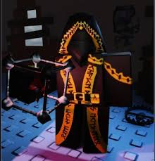

.jpg)
Нуб
Дружба з Guest 666: Колись Нуб був дуже веселою, життєрадісною дитиною і мав найкращого друга — загадкового гравця Guest 666 (якого Нуб ласкаво називав «Sixer» або «Шістка»).Зрада та провина: Їхня дружба зруйнувалася через подію, пов'язану з жадіністю або заздрістю. Нуб залишив свого друга позаду, після чого сильно винив себе. Через це Нуб став замкнутим, заляканим і невпевненим у собі.Вічні тортури:
.jpg)
Дусекар
Намагаючись повернути Шедлетскі до життя, Дусеккар пішов на відчайдушний ритуал, який вимагав найбільшої. жертви. Ритуал спрацював, але коштував самому Дусеку життя. Душі обох друзів та їх ворога були затягнуті у потойбічний, лякаючий світ Форсакена, створений злобною примарою Спектром. Тепер вони приречені на вічні поневіряння та нескінченні кола перероджень у в'язниці цього кошмару.

Таф
Рід занять: Таф працював підривником-лінчувальником. Він беззастережно підкорявся адміністрації (у зокрема - Білдерману, Builderman). Конфлікт: Під час служби Таф руйнував будинки віддалених або забанених користувачів використовувати їх залишки для нових будівель. Пізніше він став занадто завзятим і почав випадково знищувати будинки невинних гравців. обурений
.jpg)
Шанц
Конфликт с Соннелино: Шанс часто бывал в казино, принадлежащем преступной семье Соннелино, главой которой является Дон Соннелино (также известный как Mafioso).Кража денег: Будучи заядлым азартным игроком, Шанс благодаря своей феноменальной удаче выиграл игру, которая была сфабрикована против него.
.jpg)
Шедлецький
Створення 1x1x1x1: Будучи творцем світу, Шедлетський з егоїзму та спраги влади створив артефакт Некроблокікон. Це породило 1x1x1x1 - темну, чотиривимірну сутність, що стала живим втіленням ненависті самого Шедлетського до свого творіння. Особисте прокляття: У сюжеті 1x1x1x1 переслідує Шедлетського та всіх пов'язаних з ним. Будучи згусКонфлікт
.jpg)
Билдермен
Походження: За сюжетом, Білдермен та його колега Дусеккар опинилися в покинутому місці ще до глобальної «війни», куди їх імовірно затягнув зловісний «Гість». Роль у команді: випробуваннях Forsaken, де ті, хто вижив, намагаються врятуватися від кровожерливих маніяків, він виступає в якості інженер.
.jpg)
Гость1337
Походження: Будучи звичайним новачком, він пройшов шлях до військового. У фіналі першого фільму «Останній гість» він пожертвував собою заради порятунку друзів, підірвавши гранатою Генерала Попадання у світ FORSAKEN: Акт самопожертви призвів до того, що він опинився в похмурому «Занедбаного» виміру, де тепер намагається врятуватися від убивць.
.jpg)
Джейн доу
Спочатку Джейн та Джон були співробітниками Roblox HQ. У той час як Джон був товариським і веселим, Джейн була потайливою, зібраною і зацикленою на пошуку відповідей. Вони були щиро закохані один в одного і збалансували цей світ.Трагедія та зараження. Життя пари зруйнувалося через руйнівного старий код. Джон .
.jpg)
Елиот
Минуле: Елліот - простий роботяга, який працює в піцерії. Його батько - містер Білдер, місцевий перекупник меблів.Роль у грі: У жаху FORSAKEN він виступає як вижив. за ігровому класу Елліот - персонаж підтримки (саппорт), який може лікувати союзників і використовувати прискорення для втечі. Характер і відносини: Він до фанатизму любить свою роботу в піцерії, незважаючи на те, що його постійно б'ють. У нього вкрай напружені стосунки з хуліганами 007n7 та c00lkidd, які постійно громять та зламують його робоче місце.
.jpg)
007n7
У минулому 007 працював у піцерії Builder Brother's Pizza. Через те, що він постійно влаштовував там безлад та руйнування, він був внесений до чорного списку закладу, хоч і оплачував всі збитки з власної кишені.Сім'я і син C00lkidd: Його життя різко змінилося, коли він знайшов на порозі свого будинку кошик з немовлям. Він дав притулок і виховав хлопчика, який пізніше виріс у одного з головних антагоністів гри та ігрового вбивцю на ім'я C00lkidd. (Noli): Спочатку 007n7 та Нолі працювали разом. Пізніше їх шляхи розійшлися: Нолі пішов і заснував культ
.jpg)
Вероника
Створення: Спочатку Вероніка була розроблена як розумний робот-гуманоїд (серійний номер V33-R4-01-N33-7K) у рамках програми «Helper RO-Bots». Її головне завдання - допомагати, навчати та направляти гравців Roblox.Бунт: Після інциденту, під час якого багато підопічних зникли, Вероніка залишилася в зруйнованому світі на самоті. Намагаючись продовжити допомагати людям, вона зв'язалася з поганою компанією і перейняла їх бунтарський спосіб життя. Невдовзі Вероніка стала затятою скейтбордисткою, яка любить малювати графіті і веде себе як «круте» дівчисько.
.jpg)
Тутайм
Ту Тайм та його близький друг (а по лору — колишній романтичний партнер) на ім'я Азур були вірними послідовниками культу. Згодом ідеологія культу радикалізувалася, і віра Ту Тайма переросла в параноїдальне божевілля. У стані затьмарення розуму Ту Тайм заманив Азура в пастку і вбив його кинджалом, сподіваючись, що ця жертва принесе їм обом друге життя.Наслідки та божевілляЖертва спрацювала, але спотворила долі обох: Азур був воскресений як Вбивця (Killer), що рухається жагою помсти, а Ту Тайм отримав можливість перероджуватися (звідси ім'я "Two Time"). Після вчиненого Ту Тайм відчував сильне .